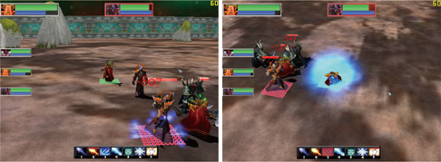
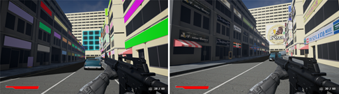
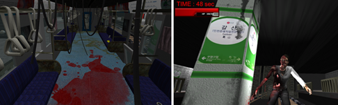
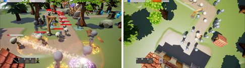
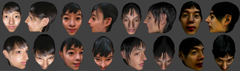

Implementation of Real-time Turn-Based Strategy Battle Game
기력 시스템을 도입하여 보다 전략적이고 자신의 캐릭터를 적절하게 이동시키는 컨트롤 요소를 추가한 실시간 전략 턴 방식 배틀 게임을 제작하였다. 3차원 실시간 전략 턴 방식 배틀 게임을 제작하였다. 단순히 일방적으로 턴이 되돌아오는 것이 아니라 할당된 기력을 관리하여 자유롭게 유닛을 조정할 수 있으며 상대의 기술에 대해 충분히 대처할 시간을 갖는다. 고전 RPG에 비해서 재빠른 판단과 손동작이 요구되도록 하여 게임 진행의 박진감을 높였다.

Automatic Allocation of Outdoor Advertising in FPS Game
FPS 게임 속 시가지 맵에서 간판, 현수막, 벽보 등의 옥외광고가 흔히 등장한다. 본 연구는 실제 상권들의 옥외광고를 FPS 게임의 시가지 맵에 자동으로 배치하는 방법을 제안한다. 옥외 광고는 실제 제품이나 기업의 광고이며 서버에서 관리되며 실제 광고가 업데이트 되는 경우에도 자동으로 배치된다. 광고의 배치에 있어서 플레이어의 위치와 실제 상권의 위치의 관계, 실제 상점의 서비스 형태 등을 활용한다. 수집한 속성들에 우선순위 점수를 부여하여 높은 순위가 우선적으로 맵에 배치된다. 제안하는 배치 방법은 플레이어의 위치를 기반으로 광고를 배치하므로 친근감 유발과 함께 광고 효과를 높일 수 있다.

Development of an Escape Horror Game in Subway Daily Life
공포게임의 무대가 되는 공간은 공포게임의 가장 중요한 구성요소 중 하나이다. 많은 공포게임들은 그 안의 미지의 생물의 존재의 당위성을 부여하기 위해 미지의 생물이 살 만한 공간, 혹은 정신병원, 성 등 평소에 사람들에게 잘 알려지지 않은 공간을 활용하는 경우가 많다. 하지만 이는 호기심을 부여할 수는 있지만, 익숙한 장소에서의 공포나, 여운을 오래 남기기는 어렵다. 본 연구에서는 일상생활에서 흔히 접할 수 있는 지하철을 배경으로 한 공포게임의 제작과정을 제안한다. 일상생활에서 자주 접하는 공간을 이용하면 익숙한 환경에 더 쉽게 적응할 수 있고, 몰입할 수 있으며, 현실감을 크게 부여할 것으로 기대한다.

Player's Skill Customization in Role-Playing Game Regarding Balancing
In most RPG games, gameplay tends to be monotonous due to fixed character skills. This paper proposes a RPG game implementation technique which allows players' skill customization for their own gameplay. Players are allowed to customize their preferred game skills at the beginning of gameplay. We also propose a technique to guarantee game balancing by prohibiting certain skills from dominating gameplay. We implemented the proposed skill customization method together with a simple RPG game testbed. We tested a variety of player-defined skills and confirmed the method provides good game balancing during gameplay. Due to the voluntary and impromptu skill customization, a wide variety of strategy is possible even at the single game stage, which reduces boredom at the repetitive gameplay.

Generating Face Textures for 3D Avatars from Photos
In this research, we propose a texture generation scheme for 3D avatars from three or more human face photos. First we manually mark image positions corresponding to vertices of a UVW map. Then, a face texture is automatically generated from the photo images. The proposed texture generation scheme extremely reduces the amount of manual work compared with the classical methods such as Photoshop-based schemes. The generated textures are photorealistic since the textures fully reflect the naturalness of the original photos. The texture creation scheme can be applied to any kind of mesh structures of 3D models and mesh structures need not be changed to accommodate the given textures.

Entertainment Computing Laboratory